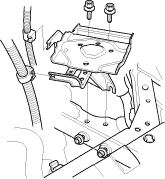
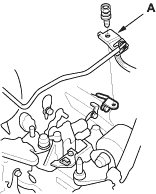
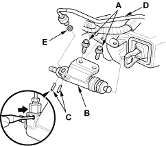
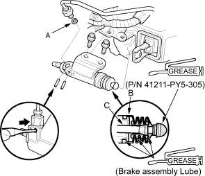

NOTE:
- Use fender covers to avoid damaging painted surfaces.
- Do not spill brake fluid on the vehicle; it may damage the paint; if brake fluid does contact the paint, wash it off immediately with water.
- Write down the frequencies for the radio's preset buttons. Disconnect the negative (-) cable first, then the positive (+) cable from the battery. Remove the battery.
- Remove the battery tray.

- Remove the air cleaner (see page 11-126).
- Remove the intake air duct (see step 7 on page 5-3).
- Remove the clutch line bracket (A).


- Remove the mounting bolts (A) and the slave cylinder (B).

- Remove the roll pins (C). Disconnect the clutch line (D), and remove the O-ring (E). Plug the end of the clutch line with a shop towel to prevent brake fluid from coming out.
- Install the slave cylinder in the reverse order of removal. Install a new O-ring (A).

- Pull the boot (B) back, and apply brake assembly lube to the boot and slave cylinder rod (C). Reinstall the boot.
- Apply Urea Grease UM264 (P/N 41211-PY5-305) to the push rod of the slave cylinder. Tighten the slave cylinder mounting bolts to 22 Nm (2.2 kgf/m, 16 lbf/ft).